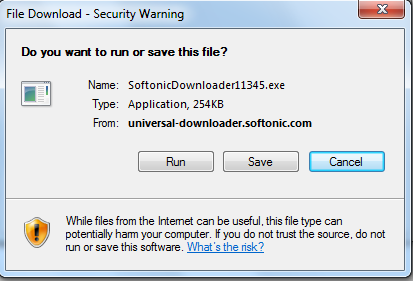

This article describes how to easily manage file downloads in your GeneXus application. If you want that in a user event the user is prompted to save or run a file like the following:  All you need to do is:
To add data to the Http response header, the GeneXus object should be callable using the Http protocol. To make a procedure callable by the Http protocol, the above setting is necessary. Procedure Source:/* Get &contenttype, &filename and &filepath from the context (Websession, Database, etc). Do not receive them via parm because of security reasons (Path transversal). */ &HttpResponse.AddHeader(!"Content-Type", &contenttype) //&contenttype could be 'application/x-zip-compressed' &HttpResponse.AddHeader(!"Content-Disposition", !"attachment;filename="+&filename) //&filename could be 'download.zip' &HttpResponse.AddFile(&filepath) //&filepath could be 'C:\temp\download.zip' &HttpResponse.AddHeader(!"Pragma", !"public") &HttpResponse.AddHeader(!"Cache-Control", !"max-age=0") How to Call the Download within GeneXus:Event 'Download' ProcedureHTTPDownload.Link() EndEvent ConsiderationsBe sure that the application has full access to &filepath. It will fail if the application cannot access to the &filepath (if not, it will throw Access Denied Exception) See Also |
| Backlinks |
| Call protocol property |